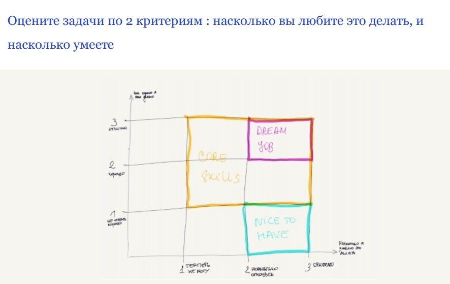
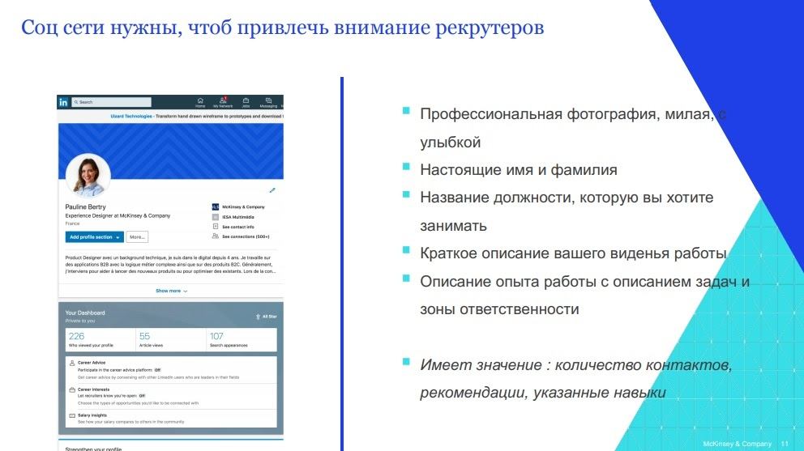
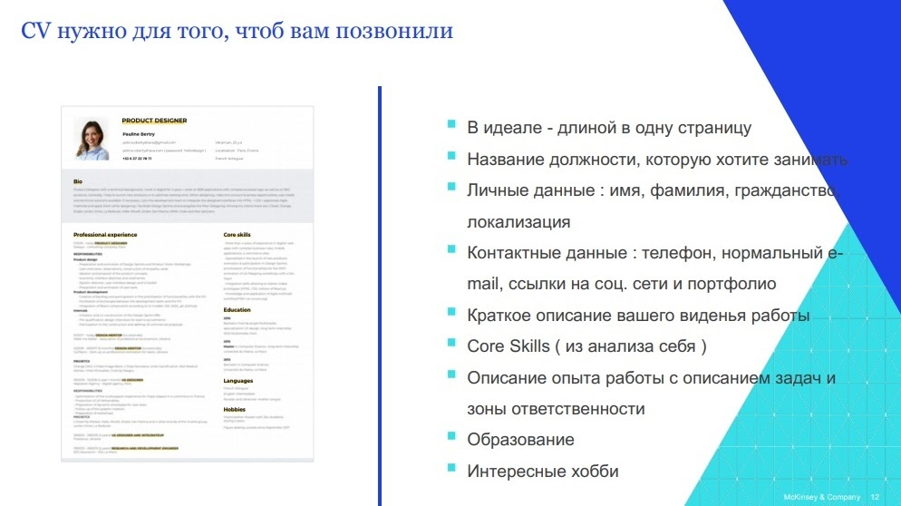
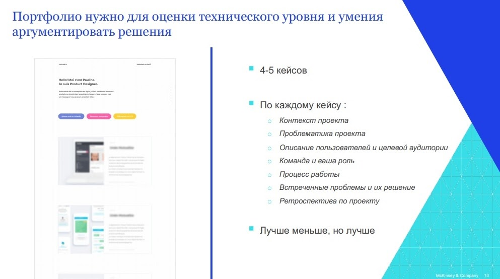

онлайн-конференция для тех, кто делает
удобные цифровые продукты

Войти
Как найти работу в UX-дизайне?
Умение найти хорошую работу – это навык, и его можно развить, уверена Pauline Bertry (Experience Designer, Digital McKinsey). В своём докладе
«Как найти классную работу. Чему я научилась во Франции»
спикер предлагает подробный поэтапный план поиска работы, и для начала советует взглянуть на себя как на «продукт», который необходимо «продать» потенциальному работодателю.
На этом же этапе полезно сформулировать и список собственных требований к будущему месту работы. Например, если для вас принципиально работать рядом с домом – следует прописать этот пункт, чтобы сразу же отбросить компании, которые по этому показателю вам не подходят.
Совет: все списки (и навыков, и требований/ограничений) составляйте письменно
Итогом этого этапа должно стать глобальное понимание, что вы умеете, чего вы хотите и чего вы не хотите.
Так вот, социальные сети нужны, чтобы привлечь внимание рекрутёров и создать вам правильный имидж. При этом речь, разумеется, идёт не об «Одноклассниках» или TikTok. В России это будет профессиональная страница в Фейсбуке, а если вы ориентированы на зарубежный рынок вакансий – аккаунт в LinkedIn.
Что должен увидеть, попав на вашу страничку, потенциальный работодатель или рекрутёр? Во-первых, это качественная фотография, обязательно с лёгкой улыбкой (думаем, не нужно объяснять – почему). Далее – настоящие имя и фамилия, а также название должности, которую хотите занимать (а не той, которую занимаете на данный момент – это важно). Кроме того, следует кратко описать ваше видение будущей работы, а также указать свой профессиональный опыт с описанием задач, которые приходилось выполнять, и вашей зоны ответственности в рамках проекта.
Совет: обратите внимание на количество контактов, рекомендации, указанные навыки
Резюме (CV) и портфолио – это два документа, по которому эйчар составляет мнение о вас как о профессионале. Именно от них в первую очередь зависит, пригласят вас на собеседование или нет.
Очевидно, что резюме должно быть написано хорошим литературным языком, без грамматических ошибок, а указанные в нём биографические факты должны иметь отношение к должности, на которую вы претендуете. Резюме для большой компании будет отличаться от резюме для маленького стартапа – обычно для этого достаточно чуть сместить акценты.
Совет: контактный e-mail, который вы указываете в резюме, должен выглядеть профессионально
Если ваша электронная почта выглядит как irishka128@gmail.com или pushistik-masya@yandex.ru – есть смысл потратить пару минут на то, чтобы завести новый почтовый ящик.
Ваше портфолио – это, пожалуй, главное, на что смотрит эйчар, отбирая кандидатов на собеседование. Именно по нему судят о ваших hard skills, а также о глубине и осмысленности подхода к поставленной задаче.
В идеале портфолио должно содержать 4-5 (как минимум – 3) кейса с описанием контекста и проблематики проекта, целевой аудитории, ваших функций в команде, рабочего процесса, а также проблем, с которыми пришлось столкнуться, и способов их решения.
О том, как грамотно оформить резюме и портфолио, можно узнать много полезного из докладов «Найм в дизайне» Марины Степановой (Учи.ру) и «Какой дизайнер нужен современной компании» Ирины Жигановой (Сбербанк).
Совет: не бойтесь откликаться на вакансии и не бойтесь отказов!
Играйте на количество – чем больше вы отправите отзывов на вакансию, тем больше вы получите ответов, в том числе отрицательных (что тоже хорошо – обратная связь помогает скорректировать линию поведения, чтобы приблизиться к цели).
25 февраля 2021 на онлайн-конференции UX-Марафон #23 | Паттерны дизайн-менеджмента дизайн-директора будут рассказывать про найм, стажировки, развитие дизайнеров и работу в международных проектах. Подключайтесь и вливайтесь в профессиональное сообщество!
Спойлер: спикеры будут публиковать вакансии.
Первый этап. Анализ себя
Для этого составьте список ваших навыков и по каждому навыку пропишите ВСЕ задачи, которые в принципе можете выполнять. Затем рассортируйте пункты списка по двум осям: «что я люблю делать» и «что я умею делать хорошо». В точке пересечения максимальных показателей по обеим осям мы получим «работу мечты» – вариант прекрасный, но не так, чтобы очень реалистичный. Поэтому гораздо больший интерес для нас представляют так называемые core skills – то, что вам нравится делать, и что вы умеете достаточно хорошо. Иначе говоря, core skills – это то, за что вам платят деньги, та польза, которую вы приносите компании.

На этом же этапе полезно сформулировать и список собственных требований к будущему месту работы. Например, если для вас принципиально работать рядом с домом – следует прописать этот пункт, чтобы сразу же отбросить компании, которые по этому показателю вам не подходят.
Совет: все списки (и навыков, и требований/ограничений) составляйте письменно
Итогом этого этапа должно стать глобальное понимание, что вы умеете, чего вы хотите и чего вы не хотите.
Второй этап. Анализ рынка
Этот этап включает в себя просмотр и анализ интересующих вас вакансий. Здесь ваша задача – отсеять заведомо неподходящие компании и выбрать те, которые вам интересны. Как это сделать?- Читайте описания вакансий. То, как они сформулированы, может достаточно много рассказать о компании. Например, если вы видите вакансию веб-дизайнера, а в перечне профессиональных обязанностей первым пунктом стоит изготовление дизайн-макетов для визиток и флаеров – в эту организацию вам точно нет смысла обращаться.
- Говорите с людьми из интересующих вас компаний. Это поможет увидеть устройство и «кухню» организации изнутри, а не в рамках формального описания в интернете.
- Почитайте об особенностях разных типов компаний, это даст вам понимание, на что можно рассчитывать в каждом конкретном случае.
Совет: разберитесь с названиями должностей
Это особенно важно, если вы планируете устраиваться в иностранную компанию – во избежание путаницы. К примеру, должность, которую в русскоязычных странах обозначают как UX/UI, во Франции называется просто UI, а должность проектировщика – UX Designer или Interaction Designer. Для зарубежных стран тоже нет какого-то единого стандарта: так, американский UX Expert соответствует французскому consultant Design Thinking.Третий этап. Подготовка резюме, портфолио, социальных сетей
На этом этапе вы приводите в порядок всё, что так или иначе работает на вашу самопрезентацию: резюме (для западных компаний – CV), портфолио, а также социальные сети. Последний пункт, возможно, представляется неочевидным, поэтому остановимся на нём поподробнее.

Так вот, социальные сети нужны, чтобы привлечь внимание рекрутёров и создать вам правильный имидж. При этом речь, разумеется, идёт не об «Одноклассниках» или TikTok. В России это будет профессиональная страница в Фейсбуке, а если вы ориентированы на зарубежный рынок вакансий – аккаунт в LinkedIn.
Что должен увидеть, попав на вашу страничку, потенциальный работодатель или рекрутёр? Во-первых, это качественная фотография, обязательно с лёгкой улыбкой (думаем, не нужно объяснять – почему). Далее – настоящие имя и фамилия, а также название должности, которую хотите занимать (а не той, которую занимаете на данный момент – это важно). Кроме того, следует кратко описать ваше видение будущей работы, а также указать свой профессиональный опыт с описанием задач, которые приходилось выполнять, и вашей зоны ответственности в рамках проекта.
Совет: обратите внимание на количество контактов, рекомендации, указанные навыки
Резюме (CV) и портфолио – это два документа, по которому эйчар составляет мнение о вас как о профессионале. Именно от них в первую очередь зависит, пригласят вас на собеседование или нет.

Очевидно, что резюме должно быть написано хорошим литературным языком, без грамматических ошибок, а указанные в нём биографические факты должны иметь отношение к должности, на которую вы претендуете. Резюме для большой компании будет отличаться от резюме для маленького стартапа – обычно для этого достаточно чуть сместить акценты.
Совет: контактный e-mail, который вы указываете в резюме, должен выглядеть профессионально
Если ваша электронная почта выглядит как irishka128@gmail.com или pushistik-masya@yandex.ru – есть смысл потратить пару минут на то, чтобы завести новый почтовый ящик.
Ваше портфолио – это, пожалуй, главное, на что смотрит эйчар, отбирая кандидатов на собеседование. Именно по нему судят о ваших hard skills, а также о глубине и осмысленности подхода к поставленной задаче.
Ваши шансы получить приглашение на собеседование стремятся к нулю, если
- ваше портфолио оформлено в виде папок или архива;
- портфолио содержит лишь красивые картинки без описания, как осуществлялась работа над проектом;
- портфолио содержит грамматические ошибки и/или плохой копирайт.
В идеале портфолио должно содержать 4-5 (как минимум – 3) кейса с описанием контекста и проблематики проекта, целевой аудитории, ваших функций в команде, рабочего процесса, а также проблем, с которыми пришлось столкнуться, и способов их решения.

О том, как грамотно оформить резюме и портфолио, можно узнать много полезного из докладов «Найм в дизайне» Марины Степановой (Учи.ру) и «Какой дизайнер нужен современной компании» Ирины Жигановой (Сбербанк).
Совет: не бойтесь откликаться на вакансии и не бойтесь отказов!
Играйте на количество – чем больше вы отправите отзывов на вакансию, тем больше вы получите ответов, в том числе отрицательных (что тоже хорошо – обратная связь помогает скорректировать линию поведения, чтобы приблизиться к цели).
25 февраля 2021 на онлайн-конференции UX-Марафон #23 | Паттерны дизайн-менеджмента дизайн-директора будут рассказывать про найм, стажировки, развитие дизайнеров и работу в международных проектах. Подключайтесь и вливайтесь в профессиональное сообщество!
Спойлер: спикеры будут публиковать вакансии.